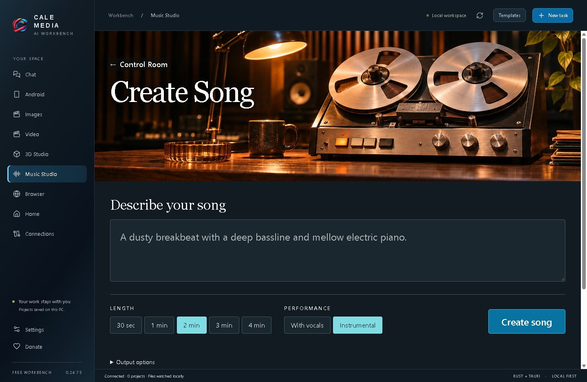
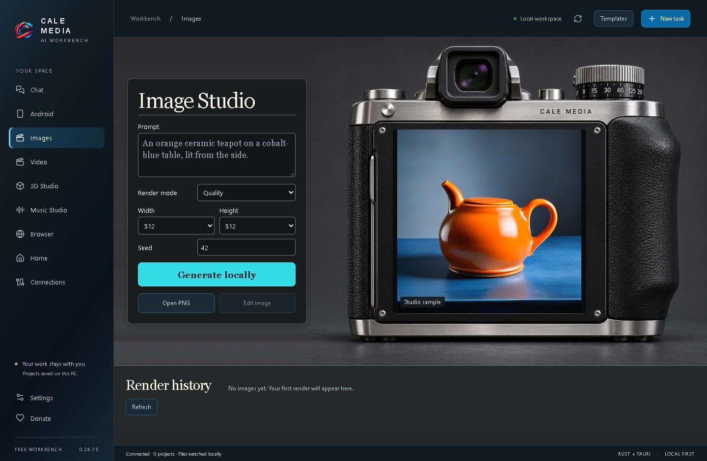
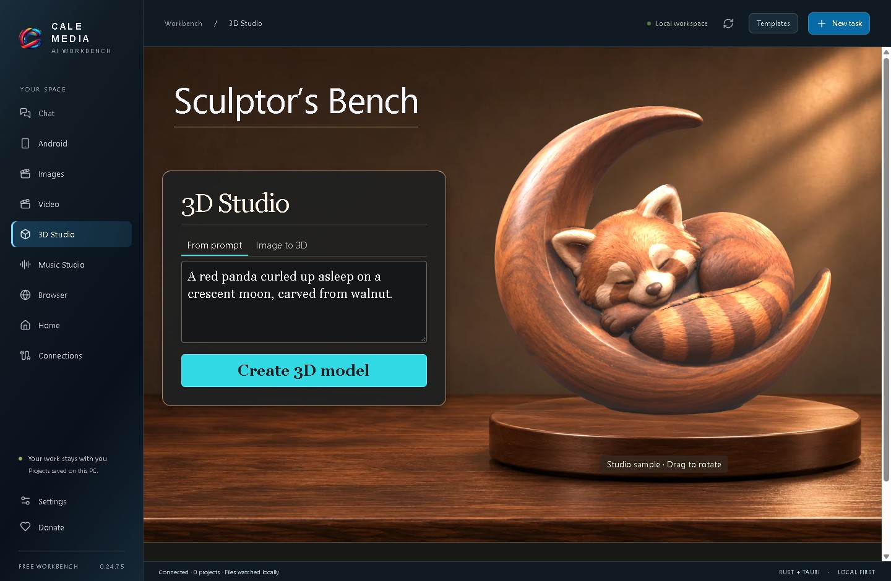
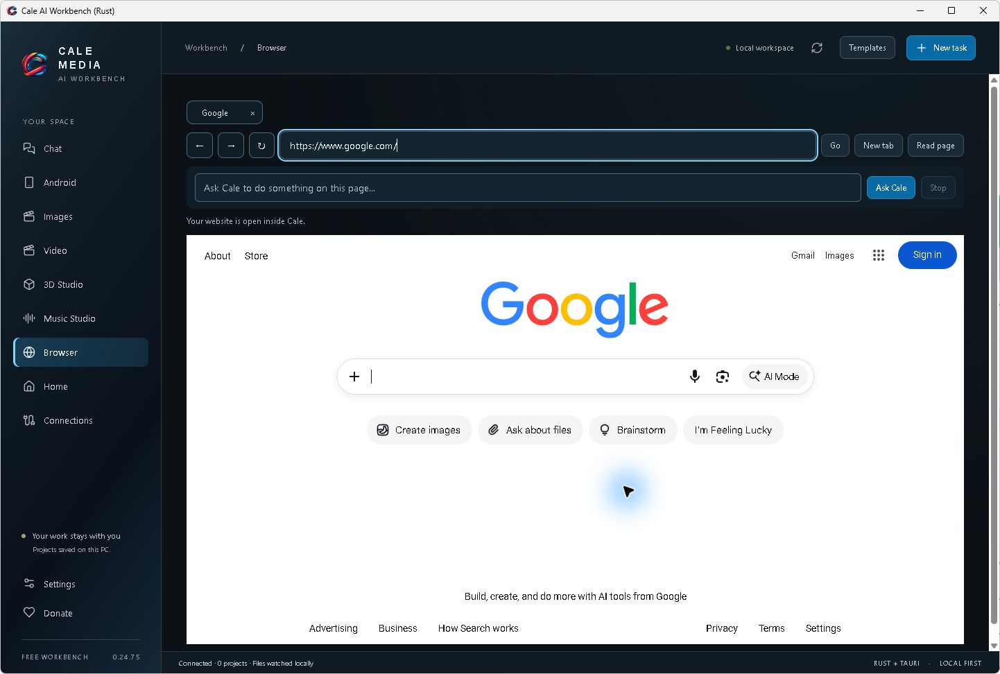
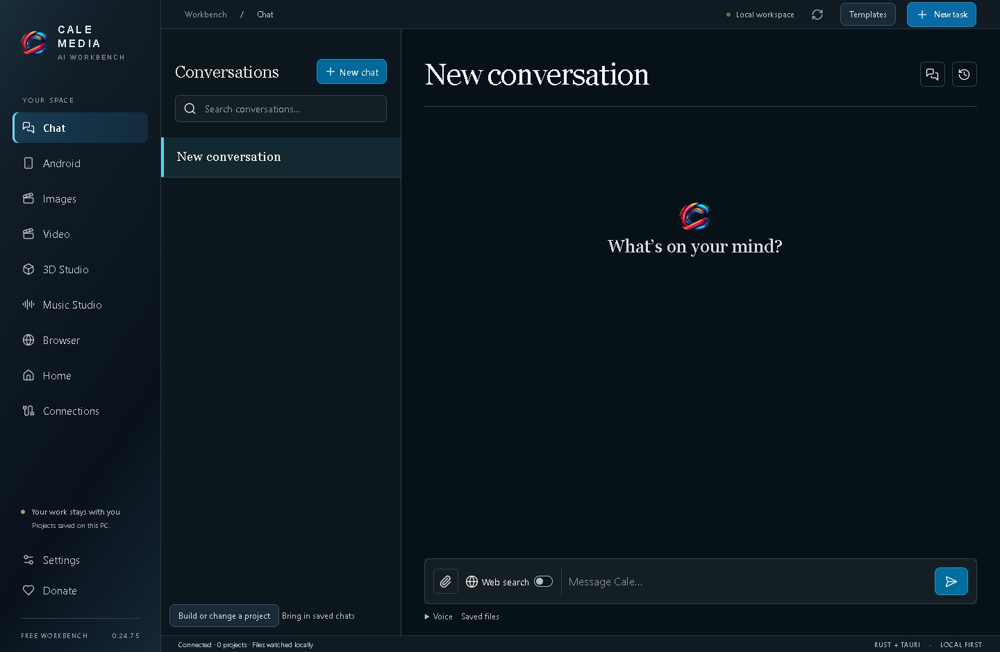

One prompt. One finished music video.
Make a one-minute rock music video. A singer performs at a roller rink with a live band. Start on the first sung line and hold one camera angle.
After the one-time studio setup, press Generate. C.A.L.E. makes the soundtrack, renders the sections and joins them into one MP4. There’s no timeline to assemble by hand.
Measured on a home PC
- GPU
- RTX 3060 12 GB VRAM
- Featured master
- 60 seconds 864 × 1536 · 24 fps
- Render time
- 2h 25m 45s 1,440 frames · Ryzen 9 5900X
Inside Workbench









